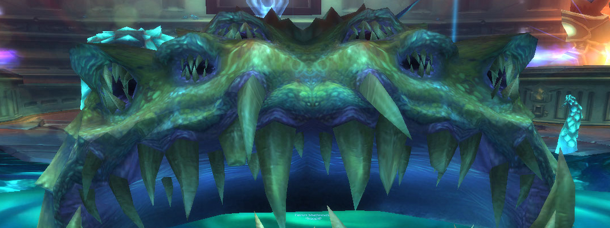
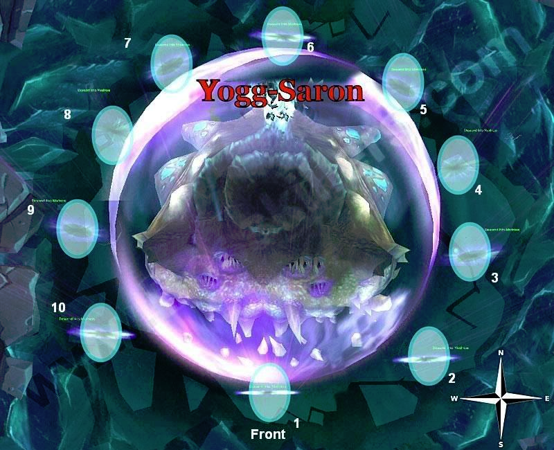

Yogg-Saron

Overview
Yogg-Saron is a 3-Phase fight
Full Mechanics Rundown
Keepers
The Keepers of Ulduar (aka Thorim, Hodir, Freya, and Mimiron) are very grateful for breaking Yogg’s mind control on them and will assist the Raid in the encounter with Yogg. They must prealably be talked to, to activate their help. This cannot be undone.
Each Keeper provides his own, large Buff to stats on the Players (which never expires), and provides a useful ability to change the fight:
- Mimiron grants +10% Damage dealt and +20% movement speed. He will also massively reduce the casting speed of enemy Adds in Phase2 (will be detailed later)
- Hodir grants +10% Damage dealt and -20% Damage taken. He also will prevent some Player deaths by encasing them in an ice block, saving their life. This has a cooldown and the Player may “/cancelaura Flash Freeze” if he’s safe and wishes to exit the ice block early.
- Thorim grants +10% Damage dealt and +20% max HP. He will also regularly execute Adds in Phase3, that would otherwise be immortal, if they reach low HP.
- Freya will grant +10% Damage dealt and +20% Healing received. She will also enable 4 Sanity Wells in the corners of the room, large green beams that reduce damage dealt while standing in it but restore Sanity.
Sanity
Sanity is a “resource” that will be displayed in a form of a Debuff on your UI. It goes from 100 to 0. The only direct effect it has is that if you reach 0 Sanity you will be mind-controlled by Yogg-Saron, gaining massively increased stats and becoming very mean to your Raid. The Mind-Control will never be undone including by Battle Rez, Soulstone, and Ankh (So do not do any of these on a previous Mindcontrolled Player/on yourself if mindcontrolled). It is not necessarily a wipe sentence but shows you fucked up.
So, back to Freya’s Sanity Wells: Simply stand on it to regenerate 20 sanity every 2 seconds. That’s it. Very fast, safe, and available in all Phases of the fight.
When a Boss’ mechanics interacts with Sanity it’ll be reminded in the writeup. In general, you can assume the following: All damage that is avoidable in Phase2 and 3 will likely also have a small damage to Sanity.
P1
Yogg will pretend to be Sara. To snap him back to his reasonable self, we have to damage Sara in the middle of the room, but it’s a friendly NPC. What to do?
- Ominous Clouds will float around the room. Their path isn’t random: They are placed on concentric circles and turn clockwise or counterclockwise. Stepping on a cloud will cause a Guardian of Yogg-Saron to appear after a few seconds. Guardians of Yogg-Saron also spawn over time regardless of Cloud-stepping experiences.
- Guardians of Yogg-Saron do moderate melee damage (clothies beware) and cast Shadow Volleys (high damage, and reduce healing recieved) which should always be interrupted. When they die, they also instantly cause a Shadow Nova, dealing heavy but healable damage (as long as not too many die at the same time). Apparently Silencing the Guardians or Interrupting a Shadow Volley before they die prevents them from doing a Shadow Nova, which is probably an exploit and is not necessary anyway.
- The Shadow Nova damages Sara (if in range) for 12.5% max HP. So, bring 8 Adds to the middle, kill them here, and Phase2 begins. Sounds great, but:
- Sara herself will cast a few spells that might cause trouble:
- Sara’s Fervor is a debuff that increases a Player’s Damage by 20% but causes him to take +100% Damage. This might be enough to cause the Player to be one-shot by a Shadow Nova when an Add dies. The Player should move out of the stacked Raid while ensuring to not step on clouds. Daddy Hodir might save you from the one-shot but this is necessary practice for Hard Mode.
- Sara’s Blessing is a debuff that causes 60K Shadow Damage over 20 seconds. In itself it’s mostly harmless and healable through, but can stack with Sara’s Fervor, becoming near-lethal damage when added on top of Shadow Novas. Players should use defensive cooldowns like Anti-Magic Shell or Ice Block if receiving both debuffs.
- Sara’s Anger is used on Guardians of Yogg-Saron rather than Players and increases their melee damage per swing by 12000. Unremarkable.
P2
Transition: The Ominous Clouds will disappear but Adds will remain, usually 1 + 1 extra that is about to spawn. Simply pull the Raid out of the center and keep killing the Adds the same way.
Yogg will show up in the center of the room (what once was a large puddle of saronite), pushing Players away if they try staying too close to his godly corpulence. He’s immune to damage in this Phase.
Now, onto Phase2 itself:
- As soon as Phase2 begins, several Tentacle Adds will spawn all around the room in random patterns. More Tentacles will also continuously spawn until the Raid manages to push Phase3. They are all stationary. The three types of Tentacles are the following:
- Corruptor Tentacles constantly cast Debuffs at random Players. All their casts can be Interrupted, and Mimiron’s presence causes them to cast 4x slower. There are 4 different debuffs (Curse, Poison, Magic, Disease) and all should be dispelled as soon as noticed on your UI. Ranked in order of danger:
- Disease (regularly stuns) > Magic (heavy slow) > Poison (HP/Mana DoT) > Curse (Curse of Doom, 12s duration)
- Corruptor Tentacles are the lowest priority to be killed among the 3 types.
- Crusher Tentacles reduce the Raid’s Damage by 20% (for each Crusher, can stack) as long as they are not being hit by melee swings. However, they also can one-shot with their melee swings (if any Player is in melee range). It is not necessary for melees to risk their lives on the Crushers, the Ranged DPS can take care of them. All Paladins should be using Judgements on Crusher Tentacles whenever it’s up, as it is classified as a melee attack and will interrupt Diminish Power (the -20% Damage reduction)
- Crushers are the second in priority to be killed.
- Constrictor Tentacle will spawn near a Player and grab it, preventing its movement and causing heavy Physical damage over time. It has fairly low HP and should be focus-fired instantly when it spawns.
- Immunity effects like Iceblock, Bubble and Hand of Protection should also free the grabbed Player - seemed inconsistent last season.
- Corruptor Tentacles constantly cast Debuffs at random Players. All their casts can be Interrupted, and Mimiron’s presence causes them to cast 4x slower. There are 4 different debuffs (Curse, Poison, Magic, Disease) and all should be dispelled as soon as noticed on your UI. Ranked in order of danger:
- Sara becomes a very attractive Val’kyr, proving Yogg has schizophrenia. She will cast the following spells to disrupt the Raid, ranked from most dangerous to least:
- Death Ray: Several lasers firing in semi-random patterns, usually edging towards Players. Two/three ticks are lethal and they tick very fast, thus should be stood away from as much as possible.
- Malady of the Mind: Cast on a random Player and behaves as a Warlock’s Death Coil. At the end of the effect, it will bounce to a nearby Player(if any is nearby). Everyone should be wary of that and move away from any Malady’d Player, which will be marked with Skull by DBM. The Malady deals low damage but reduces Sanity.
- Brain Link: Two Players will be bound by a link that forces them to go close to each other. If the Players are over 20 yards away from each other they will take damage and lose Sanity. The link will be red if that is the case.
- Psychosis: Random unavoidable damage on a Player, also reducing Sanity.
- Induce Madness: One minute after transition, this mechanic will begin on a cycle.
- Every time Induce Madness is cast, 10 Portals will open around Yogg. Their positions are fixed and they will be assigned to Players. Those Players should be ready in front of their assigned portal before they’re active.
- Clicking on the Portal leads to a Brain Room, of which three are possible. The layout changes but the same rules apply:
- The Players in the Brain Room must move to eutral NPCs and destroy them. They will reflect % of incoming damage, justifying the presence of a Healer among the 10 Players.
- While doing so, they must avoid facing, (their character, not the camera…) as much as possible, the light-purple laughing skulls. Facing them causes damage and reduces Sanity.
- Once all NPCs have been destroyed the laughing skulls will be removed and a wall of the room will be removed. Proceed through it to find the Brain of Yogg-Saron, which is the actual caster of Induce Madness. The Brain can be damaged, doesn’t fight back in any way, and all damage done to the Brain will carry over to Yogg himself. Damaging the Brain is the only way to make Phase3 happen. As long as the Brain is exposed, all Tentacles will be stunned and no more will spawn.
- Near the Brain some Portals will allow the trip back to the main room. Should any Player remain in the Brain Room when Induce Madness completes casting (It’s a 60s cast), they will instantly be lowered to 0 Sanity and be Mind Controlled. The Brain Room should be left with a generous 2-3 seconds remaining before the end.
- 30 seconds after Induce Madness completes, a new Induce Madness will be cast and Portals will open, rinse and repeat.
- Once Yogg-Saron reaches 30% HP due to Brain damage (heh), Phase3 begins.
P3
Yogg decides to stop messing about and remembers he’s supposed to be a God of Death and not of Tentacles of Brains, and engages the Raid directly.
He’s still stationary and will still bump out any Players in him. He does not melee.
Leftover Tentacles from Phase2 will not be removed and should either be dealt with or ignored, at the discretion of the RL.
- He will cast Lunatic Gaze extremely frequently on a fixed cooldown. Anytime Lunatic Gaze is being channeled, any Player that faces towards Yogg will take damage and lose a large amount of Sanity, every second. While Lunatic Gaze isn’t being cast, it’s back to normal.
- Immortal Guardians will spawn very frequently, in various corners of the room, sometimes very close to Players. They deal high melee damage (enough to OS a clothie) and should be picked up A.S.A.P. However, they deal less damage (and become smaller) as their %HP is lowered. They will attempt to cast Drain Life to heal back up (and even when full HP), which should be interrupted.
- As mentioned earlier, the Immortal Guardians are Immortal, but Uncle Thorim got your back and out-mortals them by finishing them off when they reach 1% HP.
- Yogg-Saron will sometimes apply Shadow Beacon to a random Immortal Guardian. After a few seconds, the Shadow Beacon, if still alive, will apply a huge Heal over Time to its nearby allies - either other Immortal Guardians or Yogg-Saron. This is not a concern in Normal Mode and will be expanded upon in the Hard Mode section.
Strategy Image Reference

Essentials
Tanks
- P1
- Pick up Adds and keep them in the center of the room.
- P2
- There’s nothing to Tank! Do your best to Interrupt the Corruptors and Judgement the Crushers (if Paladin) and Dispel.
- Regenerate Sanity in the Sanity Well if needed.
- P3
- Pick up Adds while facing away from Yogg. Interrupt their Drain Life.
Healers
- P1
- Focus heals on debuffed targets and patch the Raid to full between each Add dying.
- P2
- Priority: Healing someone who’s about to die literally in the next GCD > Dispels >>>>>>>>>>>>>>>> Any other kind of Healing.
- Hpals should Judgement Crushers whenever it’s off cooldown.
- Healer assigned to Brain Room (likely Druid or Discipline) must keep moving and blanket the Raid will facing away from skulls.
- Regenerate Sanity in the Sanity Well if needed.
- P3
- Face away from Yogg at all times, as none of your spells require facing an enemy. Focus heals on the Tank, as the Raid should not take any noticeable damage.
DPS
- P1
- Interrupt Adds anytime and stay stacked with the Raid.
- P2
- Ranged on Crushers, Melees on Corruptors with Interrupts. Constrictors instantly become #1 priority when they spawn.
- Brain Room saves cooldowns for the Brain itself and must regenerate their Sanity in the Sanity Well if needed.
- P3
- Melees should cleave Adds and only turn on Yogg-Saron if no Adds remain. Ranged should always be on Yogg-Saron unless Adds start overwhelming the Raid. Neither DPS should be facing Yogg more than 1 tick of Lunatic Gaze. Warlocks and Shadow Priests should turn away whenever channeling a Drain Soul or Mind Flay.
- Regenerate your Sanity in a Sanity Well if needed.
Special Assignments
One DPS will be tasked to deal a large amount of Damage in a single blow on Brittle Adds when they enter the water. Mages or Hunters are good candidates for it, though other classes can apply.
Hard Mode
This boss has a hard mode for the fight. Click here to check its guide.